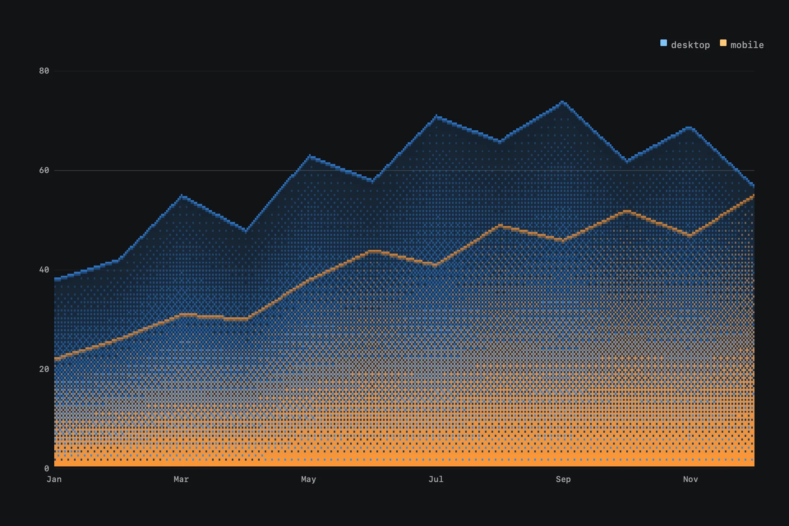
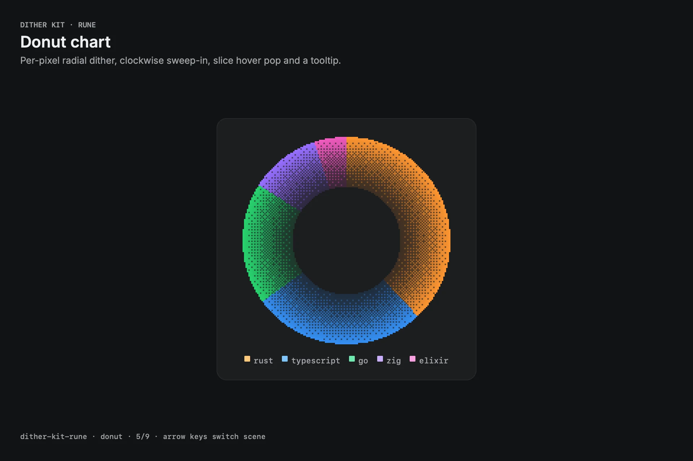
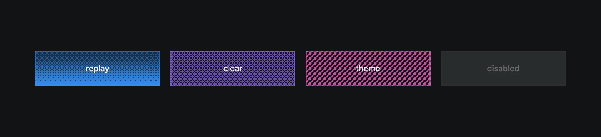

dither-kit-rune
a native rune port of dither-kit — five chart types, generative avatars, buttons, and gradient washes on one tiny deterministic engine
Composable, dithered charts with typed Rust builders. Ordered-dither fills that hold up in light and dark, entrance animations, a gliding scrub, legend selection, and the same alpha-tier model across every component.
scrub it, hover a legend entry to isolate that series, arrow keys inspect

install
via cargo — the workspace is the project$
cargo run -p gallery
$
cargo run -p gallery -- --scene donut
$
cargo test --workspace
or
The engine lives in
crates/dither-core with no UI dependency; the
Rune integration and builders live in crates/dither-kit-rune.
Rune is pinned to a dev revision and every patch is mirrored in the
workspace manifest.
charts
one surface, four dither variantsHover to scrub, click a legend entry to isolate a series, arrow keys move the crosshair.
area area-chart
900 × 520
bar bar-chart
900 × 520

sparkline spark-a
900 × 300

donut pie-chart
640 × 560

radar radar-chart
720 × 560

Chart::new(ChartSpec::new((900, 520), months, series, values)
.kind(ChartKind::Area)
.stack(StackMode::Stacked)
.reference(60.0))beyond charts
standalone — none of these pull in the chart engineavatar avatar
8 × 92
button button
4 × 200 × 56

gradient gradient
900 × 480

knobs
per-series, typed, no stringly reflectionvariant
"gradient" | "dotted" | "hatched" | "solid"stack
"default" | "stacked" | "percent"colours
green blue purple pink orange red greyanimate
entrance + replay, settles under reduced motioninteractive
false = decorative spark, no crosshair or tooltipput together
the gallery dashboard